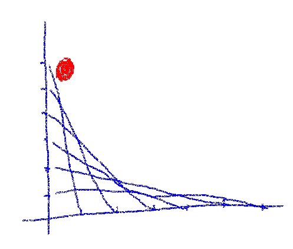

library(torch)
x <- torch_ones(2, 2, requires_grad = TRUE)Introducción

Anteriormente se vio como programar una red neuronal simple desde el principio usando únicamente tensores de torch. Las predicciones, perdidas, gradientes, actualizaciones en los pesos, todas estas cosas las calculamos nosotros mismos. Ahora vamos a hacer un avance significativo: vamos a ahorrarnos el calculo de los gradientes y tenemos a torch para que haga eso por nosotros.
Pero antes, debemos obtener un poco de contexto.
Diferenciación automatica con autograd
torch usa un módulo llamado autograd para:
- Registrar las operaciones aplicadas a los tensores y
- Almacenar lo que se ha hecho para obtener los gradientes correspondientes, una vez que se ha entrado en la fase de retro-propagación.
Estas acciones previas son almacenadas internamente como funciones y cuando es el momento de calcular los gradientes, estas funciones se aplican en orden: se inicia desde el nodo de salida y se calculan los gradientes sucesivamente en retro-propagación a través de la red. Es una forma de modo reverso de diferenciación automática.
Bases del autograd
Como usuarios, podemos ver un poco de la implementación. Como prerequisito para que el registro ocurra, los tensores tiene que ser creados con requires_grad = TRUE. Por ejemplo:
Para ser claros, x es ahora un tensor con respecto al cual se tiene que calcular el gradiente, normalmente un tensor que representa pesos o sesgos 1, no los datos de entrada. Si nosotros aplicamos subsecuentemente una operación a dicho tensor y asignamos el resultado a y:
y <- x$mean()Ahora encontramos que y tiene un registro no-vacio en grad_fn que indica como debe calcularse el gradiente de y en el punto x:
y$grad_fnMeanBackward0El cálculo de los gradientes se hace en el llamado a la función backward() en el tensor de salida.
y$backward()Después de backward(), x tiene un campo no-nulo llamado gradque almacena el gradiente de y en el punto x:
x$gradtorch_tensor
0.2500 0.2500
0.2500 0.2500
[ CPUFloatType{2,2} ]En cadenas mas largas de cómputos, podemos revisar como torch construye un grafo de operaciones backward. A continuación tenemos un ejemplo un poco mas complejo, siéntase libre de saltarlo si no es del tipo que inspeccionar los detalles para que la cosas tengan sentido.
Profundizando
Se construye un grafo simple de tensores, con entradas x1y x2 siendo conectadas a la salida out por intermedio de y y z.
x1 <- torch_ones(2, 2, requires_grad = TRUE)
x2 <- torch_tensor(1.1, requires_grad = TRUE)
y <- x1*(x2+2)
z <- y$pow(2)*3
out <- z$mean()Para ahorrar memoria, los gradientes intermedios normalmente no son almacenados. Llamando a retain_grad() en un tensor nos permite cambiar la opción predeterminada. Hagamoslo aquí a modo de demostración:
y$retain_grad()
z$retain_grad()Ahora podemos revisar el grafo para inspeccionar el plan de acción de torch para la retro-progagación, empezando desde out$grad_fn:
# cómo se calcula el gradiente para el promedio, la ultima acción ejecutada
out$grad_fnMeanBackward0# cómo se calcula el gradiente para la multiplicación por 3 en z = y.pow(2)*3
out$grad_fn$next_functions[[1]]
MulBackward1# cómo se calcula el gradiente para pow en z = y.pow(2)*3
out$grad_fn$next_functions[[1]]$next_functions[[1]]
PowBackward0# cómo se calcula el gradiente para la multiplicación en y = x*(x+2)
out$grad_fn$next_functions[[1]]$next_functions[[1]]$next_functions[[1]]
MulBackward0# cómo se calcula el gradiente de las dos ramas de y = x*(x+2), donde el camino izquierdo es un nodo hoja (AccumulateGrad para x1)
out$grad_fn$next_functions[[1]]$next_functions[[1]]$next_functions[[1]]$next_functions[[1]]
torch::autograd::AccumulateGrad
[[2]]
AddBackward1# Aquí llegamos a otro nodo hoja (AccumulateGrad para x2)
out$grad_fn$next_functions[[1]]$next_functions[[1]]$next_functions[[1]]$next_functions[[2]]$next_functions[[1]]
torch::autograd::AccumulateGradSi llamamos ahora out$backward(), todos los tensores en el grafo tendrán sus respectivos gradientes calculados.
out$backward()
z$gradtorch_tensor
0.2500 0.2500
0.2500 0.2500
[ CPUFloatType{2,2} ]y$gradtorch_tensor
4.6500 4.6500
4.6500 4.6500
[ CPUFloatType{2,2} ]x2$gradtorch_tensor
18.6000
[ CPUFloatType{1} ]x1$gradtorch_tensor
14.4150 14.4150
14.4150 14.4150
[ CPUFloatType{2,2} ]Después de esta revisión, observemos ahora como autograd hace nuestra red neuronal mas simple.
Red Neuronal, usando autograd
Gracias a autograd podemos despedirnos del proceso tedioso y propenso a errores de programar la retro-propagación por nosotros mismos. Un único método hace todo esto: loss$backward().
Con torch registrando las operaciones, no se requiere nombrar explícitamente los tensores intermedios. Podemos programar la propagación hacia adelante, hacer el calculo de las perdidas y la retro-propagación en solo tres lineas:
y_pred <- x$mm(w1)$add(b1)$clamp(min = 0)$mm(w2)$add(b2)
loss <- (y_pred - y)$pow(2)$sum()
loss$backwardA continuación el código completo. Estamos en una fase intermedia: Aun tenemos que calcular manualmente la propagación hacia adelante y las perdidas y aun tenemos que actualizar manualmente los pesos. Por esto último, hay algo que requiere ser explicado, pero revisemos primero la nueva versión de la red neuronal:
library(torch)
### Generación de los datos de entrenamiento
# Dimensión de la entrada (número de características de entrada)
d_in <- 3
# Dimensión de la salida (número de características predecidas)
d_out <- 1
# Número de observaciones del conjunto de entrenamiento
n <- 100
# Creación de datos aleatorios
x <- torch_randn(n, d_in)
y <- x[, 1, drop = F] * 0.2 - x[, 2, drop = F] *1.3 - x[, 3, drop = F] * 0.5 + torch_randn(n, 1)
### inicialización de los pesos
# Dimensiones de la capa oculta
d_hidden <- 32
# Pesos que conectan la entrada con la capa oculta
w1 <- torch_randn(d_in, d_hidden, requires_grad = T)
# Pesos que conectan la capa oculta con la salida
w2 <- torch_randn(d_hidden, d_out, requires_grad = T)
# Sesgos de la capa oculta
b1 <- torch_zeros(1, d_hidden, requires_grad = T)
# Sesgos de la capa de salida
b2 <- torch_zeros(1, d_out, requires_grad = T)
### Parámetros de la red
learning_rate <- 1e-4
### Ciclo de entrenamiento
for(t in 1:200){
### Propagación hacia adelante
y_pred <- x$mm(w1)$add(b1)$clamp(min = 0)$mm(w2)$add(b2)
# clamp simula
### Cálculo de la perdida
loss <- (y_pred-y)$pow(2)$sum()
if(t %% 10 == 0)
cat("Epoch: ", t, " Loss: ", loss$item(), "\n")
### Retro-propagación
# cálculo del gradiente, todos los tensores con requires_grad = TRUE
loss$backward()
### Actualización de los pesos
# se ejecuta con with_no_grad() porque esta parte no queremos que se
# haga calculo automático del gradiente
with_no_grad({
w1 <- w1$sub_(learning_rate * w1$grad)
w2 <- w2$sub_(learning_rate * w2$grad)
b1 <- b1$sub_(learning_rate * b1$grad)
b2 <- b2$sub_(learning_rate * b2$grad)
# el método sub_ parece que resta al tensor original el argumento
# Actualización de los gradientes después de cada ciclo, de
# otro modo se acumularían
w1$grad$zero_()
w2$grad$zero_()
b1$grad$zero_()
b2$grad$zero_()
})
}Epoch: 10 Loss: 176.326
Epoch: 20 Loss: 126.9562
Epoch: 30 Loss: 115.167
Epoch: 40 Loss: 110.2214
Epoch: 50 Loss: 107.4412
Epoch: 60 Loss: 104.9799
Epoch: 70 Loss: 102.9808
Epoch: 80 Loss: 101.2993
Epoch: 90 Loss: 99.50574
Epoch: 100 Loss: 97.84877
Epoch: 110 Loss: 96.35872
Epoch: 120 Loss: 95.11468
Epoch: 130 Loss: 94.0111
Epoch: 140 Loss: 92.97823
Epoch: 150 Loss: 91.99876
Epoch: 160 Loss: 90.98146
Epoch: 170 Loss: 90.04476
Epoch: 180 Loss: 89.19314
Epoch: 190 Loss: 88.43552
Epoch: 200 Loss: 87.65956 Como se explicó antes, después de algun_tensor$backward(), todos los tensores precedentes en el grafo actualizarán los campos grad2. Nosotros hacemos uso de esos campos para actualizar los pesos, pero ahora autograd esta “encendido”, siempre que se ejecute una operación esta quedará registrada para la retro-propagación, por lo cual se requiere desactivar el autogradde forma explicita usando with_no_grad().
Mientras que esto es algo que podríamos clasificar como “bueno saberlo”, dado que una vez lleguemos al último documento de la serie, la actualización de los pesos también será automatizada, el concepto de reiniciar en cero los gradientes esta aquí para quedarse: los valores almacenados en los campos gradse acumulan, en cualquier parte donde se usen, será necesario reiniciarlos en cero para reutilizarlos.
En resumen
En donde quedamos? Se inicio con la programación de la red neuronal completamente de cero, únicamente usando tensores. Ahora obtuvimos una ayuda significativa usando autograd.
Pero aun estamos usando la actualización manual de los pesos y aun no tenemos abstracciones que nos permitan un fácil desarrollo de arquitecturas de aprendizaje profundo (“Capas” o “Módulos”).
Ambos temas serán tratados en las próximas entregas. Gracias por leernos!